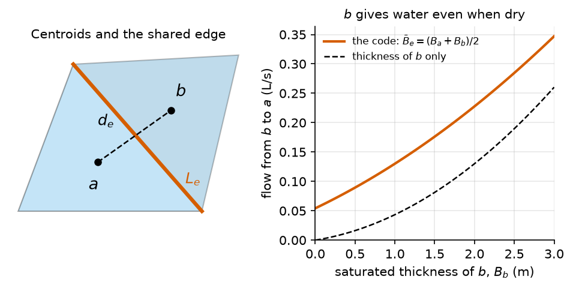
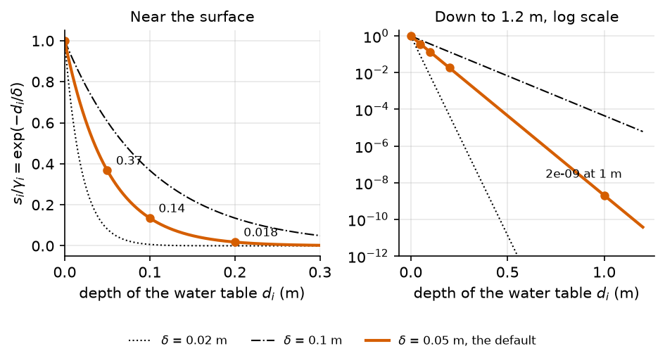
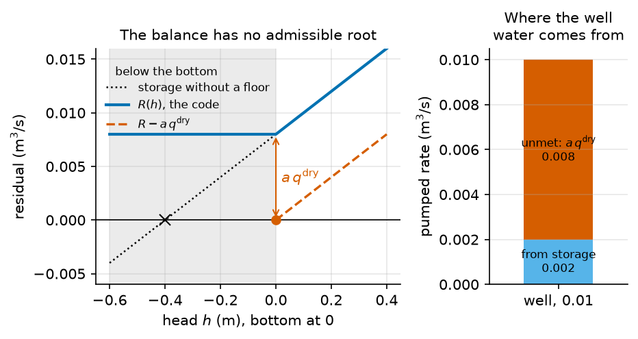

Boussinesq theory#
This page gives the equations of the in-house Boussinesq solver, in the order the code applies them, with what they assume and where they stop being true. It does not say how to set up a run: the solvers and what each supports are in Solvers.
The solver is not a MODFLOW wrapper. It writes one mass balance per triangular cell of a 2D mesh, with the hydraulic head as the unknown. The equation behind it is the Boussinesq equation under the Dupuit assumptions [Boussinesq, 1877, Boussinesq, 1904, Dupuit, 1863]; a textbook treatment is [Brutsaert, 2005].
Note
Scope. The solver is chosen with
solvers in a flow process. It runs one layer
on a triangular mesh. It reads the conductivity and the specific yield, and
nothing else about the ground. It builds recharge, wells, imposed heads on the
sides, on the streams and on the ocean, and a top drain. A file that asks for
another term is refused (see Limits). Set solver.backend to
boussinesq as well as the process: only then is the file checked against this
solver when it is read.
Notation#
Every quantity is per cell \(i\), or per edge \(e\) between two cells, unless the table says otherwise. Lengths are in metres, times in seconds, rates in m/s. Every symbol of the site is on Notation.
Notation of this page
Symbol |
Meaning |
Unit |
Set by |
|---|---|---|---|
\(\Delta t\) |
length of a stress period, the stretch of time that gets one forcing value |
s |
|
\(h_i\) |
hydraulic head of the cell, the unknown |
m |
state, not a field |
\(a_i\) |
area of the triangle |
m² |
the mesh |
\(z_{\mathrm{top},i}, z_{\mathrm{bot},i}\) |
land surface and bottom of the aquifer, sampled at the centroid of the cell |
m |
|
\(H_i\) |
thickness of the cell, \(z_{\mathrm{top},i} - z_{\mathrm{bot},i}\) |
m |
derived |
\(K_i\) |
hydraulic conductivity |
m/s |
|
\(S_{y,i}\) |
specific yield, the storage coefficient of the solver |
||
\(B_i\) |
saturated thickness, clipped to the cell |
m |
derived |
\(T_i\) |
transmissivity, \(K_i B_i\) |
m²/s |
derived |
\(L_e, d_e\) |
length of the edge, distance between the two centroids |
m |
the mesh |
\(\tau_e\) |
transmissive factor of the edge |
m²/s |
derived |
\(q_e\) |
flow through an internal edge, positive from cell \(a\) to cell \(b\) |
m³/s |
derived |
\(H^D_j\) |
imposed head of a constrained cell \(j\) |
m |
|
\(\Phi^D_j\) |
flow the constraint supplies to cell \(j\), positive into the cell |
m³/s |
derived |
\(N_i\) |
recharge rate, positive into the aquifer |
m/s |
|
\(\Phi^{\mathrm{well}}_i\) |
well rate, positive for injection |
m³/s |
|
\(C_i\) |
conductance of the top drain |
m²/s |
|
\(q^{\mathrm{drain}}_i\) |
flow leaving through the top drain |
m³/s |
derived |
\(M_i\) |
drainable volume held by the cell |
m³ |
derived |
\(R_i\) |
residual of the balance of the cell, positive when the cell loses water |
m³/s |
derived |
\(s_i\) |
release of water at the surface, regularized closure |
m/s |
derived |
\(\sigma_i\) |
saturation ratio, \(B_i / H_i\) |
derived |
|
\(\gamma_i\) |
water that arrives at the cell per unit area, lateral inflow plus positive recharge |
m/s |
derived |
\(\varepsilon_r\) |
radius of the regularization, 0.05 |
constant of the code, not a field |
|
\(q^{\mathrm{ex}}_i\) |
saturation excess released at the surface, an unknown of the mixed closure |
m/s |
state, not a field |
\(q^{\mathrm{dry}}_i\) |
unmet demand at the bottom of the aquifer, an unknown of the mixed closure |
m/s |
state, not a field |
\(q_s, h_s\) |
rate and length that scale the two arguments of the Fischer-Burmeister function |
m/s, m |
derived |
The residual of a cell is in m3/s. The recharge and the two surface rates are in m/s, so they enter the balance multiplied by the area \(a_i\).
From the Boussinesq equation to one residual per cell#
The solver does not discretise the differential form of the equation. It integrates
the balance over each triangle and writes the flux through each edge with a two-point
formula between the centroids: a cell-centred finite-volume scheme with one head per
cell. The space scheme is the descriptor FV_TRI_CELL_CENTERED in
discretization/space.py.
The sign convention is the one of the code. A residual term that is positive removes water from the cell. Recharge and injection therefore enter with a minus sign. A converged solution satisfies \(R_i \approx 0\) in every cell that is not constrained.
1. Saturated thickness and transmissivity#
The nonlinear solver may try a head below the bottom of the aquifer or above the
land surface. The physical operators read it through a thickness that is always
admissible (saturated_thickness_from_head and transmissivity_from_head in
assembly/fluxes.py):
The thickness is zero for a head at or below the bottom, and \(H_i\) for a head
at or above the land surface. A head above the land surface does not add
transmissivity. The mesh builder refuses a cell whose top is below its bottom: the
message says z_top_centroid must be >= z_bottom_centroid.
2. Flow between two cells#
Take an internal edge \(e\) shared by cells \(a\) and \(b\).
internal_edge_flux_from_head defines one oriented flux, positive when water
leaves \(a\) and enters \(b\):
where \(K^{H}_e = 2 / (1/K_a + 1/K_b)\) is the harmonic mean of the two conductivities, and zero if either is not positive. \(\bar{B}_e = (B_a + B_b)/2\) is the mean of the two saturated thicknesses. The distance \(d_e\) is floored at a tiny positive value so that a degenerate edge does not divide by zero. The flux enters the two cells with opposite signs, so water is conserved across every edge.
The thickness of the edge is the arithmetic mean, not the thickness of the donor cell. The flux therefore does not fall to zero when the cell that gives water is dry. On a sloping substratum a dry cell can sit higher than its wet neighbour and be asked to give water it does not hold. That is the case the lower obstacle handles (see The lower obstacle).

Fig. 43 Left: the two cells of (27), the shared edge of length
\(L_e\) and the distance \(d_e\) between the centroids. Right: cell
\(b\) sits 6 m higher on the substratum and drains into \(a\), whose
saturated thickness stays 5 m; the flow comes from internal_edge_flux_from_head.
Look at \(B_b = 0\): with the mean thickness the dry cell \(b\) still gives
water, where a donor thickness would give none.#
3. Cells with an imposed head#
The solver imposes a head on cells, not on edges. Three kinds of boundary resolve
to a set of constrained cells \(j\), each with a head \(H^D_j\) per stress
period (forcing/dirichlet_support_resolution.py):
a side of the mesh (north, south, east, west): the owner cells of the boundary edges on that side;
the streams: the owner cells of the edges the mesh tags as river;
the ocean: the owner cells of boundary edges that are not river edges and whose land surface is at or below the ocean stage of the period.
A boundary can also name a support of the mesh with
flow.bc.<name>.support_label. The cells of that support are constrained
instead of the default ones.
Two boundaries that give different heads to the same cell are refused (the message
says overlaps another prescribed-head BC on cell). An outer edge that carries
no boundary is a no-flow edge: no term couples it to anything.
On a constrained cell the head is overwritten by \(H^D_j\) before any flux is
computed, and the row of the nonlinear system is replaced by the constraint itself
(resolve_boundary_head_inputs and finalize_boundary_constrained_residual in
assembly/inputs.py):
\(R_j\) is the balance the cell would have had if it were free. The constraint
carries \(\Phi^D_j = -R_j\), which is positive when water leaves the model
through that cell. A constrained cell is a boundary, as in MODFLOW: its recharge,
wells and drain do not act (on_free_cells in assembly/inputs.py), and a well
placed there pumps nothing (the run warns). Its flux is the water its free
neighbours send in or draw out, plus the change of its own storage when
\(H^D_j\) changes between periods. The residual the run exports adds
\(\Phi^D_j\) back: it is zero on a constrained cell, and its sum is the closure
error of the run (_balance_residual_m3_s in drivers/state.py).
Because the head is pinned at the centroid of the cell and not on the edge, the
solution at the boundary cell differs from the value on the edge by about the
gradient times half a cell. The note at the top of runtime_contract.py records
this choice and its size on the Dupuit test case. An edge form of the exchange
exists for diagnostics only: the driver rebuilds it after the solve to export the
exchange by edge (assembly/boundary_flux_reconstruction.py).
4. Recharge and wells#
The recharge \(N_i\) is a rate per unit of area. It is constant over a stress
period. It is either one number per period, the same on every cell, or one value
per cell when the file loads a recharge field. The volume rate that enters the cell
is \(a_i N_i\). A negative recharge is refused: the message says
must be non-negative. A transient period keeps its own value. A steady period
takes flow.sinks_sources.recharge.first_clim (Rain and evaporation: the forcing): the period of a
steady run, and the first period of a transient run when
flow.first_period_steady is true, as in MODFLOW.
A well is a volume rate \(\Phi^{\mathrm{well}}_i\), positive for injection and negative for pumping. It is placed on the triangle that contains its x and y coordinates, in the one layer of the model. A well outside the mesh is refused. A well in a layer other than the first, or addressed by a grid cell, is refused too. Wells that fall in the same triangle add up.
5. The top drain#
The drain removes water only where the head is above the land surface
(drainage_outflow_from_head):
It is an outflow, and enters the residual with a plus sign. The conductance
\(C_i\) is the value of flow.bc.drainage.value, the same for every cell
in a given period. When that value is not positive, the code derives
\(C_i = K_i\,a_i/b\) instead, with \(b\) the drain bed thickness
solver.drain_bed_thickness_m (derived_drain_conductance_m2_s in
assembly/fluxes.py). It is the derivation of both MODFLOW solvers
(Drains and evapotranspiration at the top of the model), with the same \(b\), without their floor for a
degenerate cell.
Two consequences follow.
The drain is never off. A run with no drainage boundary passes a conductance of zero, which selects the derivation. A cell whose head rises above the land surface always loses water through \(K_i a_i/b\).
On a cell supported by the ocean, the driver sets the conductance to zero to silence the drain (
apply_ocean_drainage_maskindrivers/forcing.py). Zero selects the derivation, so these cells drain with \(K_i a_i/b\) instead of with the configured value.
The discharge that a calibration reads from this solver is the sum over the cells
of this drain flow (extract_discharge_history in calibration_extractors.py).
It does not include the release at the surface, defined below.
6. Storage and the time step#
A transient run adds a storage term, with a backward Euler time scheme. The volume
held by a cell is lower-bounded and not capped (_stored_saturated_volume_m3 in
assembly/residuals.py):
and the term that enters the residual is
Transmissivity uses the capped thickness \(B_i\); storage does not. Two reasons explain the difference. A head below the bottom must not give a negative volume. A head above the land surface, which the head-only closures allow, must keep the memory of the previous step: with a capped volume, the change of storage over the step would be lost.
Each stress period is split into simulation.time.substeps_per_period
backward Euler steps of equal length \(\Delta t\), one by default. The forcing is
constant over the period and is evaluated at the end of each step. The PETSc obstacle
runtimes can refine each of these steps further (see
Boussinesq engines and experimental closures).
A stamp closes its period (Time alignment of outputs and observations). A period exports the heads at its end, those of its last step, and the mean of the fluxes of its steps, weighted by their length: recharge, wells, drain, release at the surface, imposed heads and the edge fluxes. The internal steps of the PETSc obstacle runtimes (VI substeps, TS steps) are averaged the same way. MODFLOW 6 and MODFLOW-NWT store the same quantities. With one step a period, the mean is the flux of that step, unchanged. The change of storage over the period, recomputed from the heads at both ends, then closes the budget with these means. A seepage mask built from the release marks the cells that released water during the period.
7. The residual of a free cell#
For every free cell, the transient problem is the sum of the storage term, the
internal fluxes, the drain, the release at the surface \(s_i\) (defined below), the
recharge and the wells, all at the new time level
(_transient_raw_residual_from_spatial_terms):
\(R^{\mathrm{int}}_i\) is the sum of the edge fluxes of the cell. The steady
problem is the same residual without the storage term. The mixed closure takes
\(s_i\) as an input instead of computing it (_with_saturation_excess in
assembly/residual_facade.py).
What happens at the surface and at the bottom#
A cell can be full to the land surface, or empty down to the bottom. The head-only
residual above needs a rule for the water that cannot be stored. The solver offers
three families of rules. With the value auto, every runtime except PETSc uses
the first, and PETSc uses the complementarity closure.
The regularized partition#
The regularized_partition closure keeps the head as the only unknown. It
releases water at the surface by a smooth function of the depth of the water table,
so that there is no sharp on and off at the moment the cell is full
(regularized_partition_surface_rate_from_balance in assembly/surface.py).
The depth of the water table below the land surface is
zero for a head at or above the top and the whole thickness for a dry cell. The sum of the fluxes through the edges of the cell is \(R^{\mathrm{int}}_i\) (step 2). The water that arrives at the cell, per unit of area and besides its storage, is the lateral inflow, the recharge and the wells, each with its sign, a pumping well being negative:
and the release is
The depth scale \(\delta\) is flow.partition_release_depth_m, 0.05 m by
default. A cell with an imposed head releases nothing: its constant-head flux
carries the water it receives. The law follows the regularized partition of seepage
and subsurface flow of Marçais et al. [2017], smoothed over the depth of the water
table in metres. The factor in front of \(\gamma_i\):

Fig. 45 The factor of (30), from
regularized_partition_surface_rate_from_balance. The dots are the depths 0,
0.05, 0.1, 0.2 and 1 m. Look at the left panel: with the default 0.05 m the
factor is 0.37 one depth scale below the surface and 0.018 at 0.2 m. The right
panel shows that at 1 m it is 2e-9, whatever the thickness of the aquifer. The
dotted and dash-dotted curves are the depth scales 0.02 and 0.1 m.#
A cell full to the surface releases the whole of what arrives, a water table 5 cm under the surface about a third of it, and a water table 1 m under the surface nothing that matters. As \(\delta\) goes to zero the law becomes the threshold of the complementarity closure below. A smaller \(\delta\) comes closer to that threshold and makes the Newton solve stiffer: near the surface, the release switches on and off with the sign of the arriving water. This is a pragmatic law and not a model of overland flow. The four runtimes of this method use the same law.
The complementarity closure#
The complementarity closure turns the surface into an exact threshold. It adds
one unknown per cell, the saturation excess \(q^{\mathrm{ex}}_i\), and replaces
\(s_i\) by it. The head cannot rise above the land surface, and water is
released only when the head is at the surface:
that is, both quantities are non-negative and their product is zero. If the head is below the surface, nothing is released. If something is released, the head is at the surface. The release is solved together with the heads, so the balance and the threshold hold at the same time.
The code does not solve the inequalities. It turns each pair into one equation with
the Fischer-Burmeister function \(\phi_\mathrm{FB}(u, v) = \sqrt{u^2 + v^2} - u - v\),
which is zero exactly when \(u \geq 0\), \(v \geq 0\) and \(u v = 0\). The
rate is scaled by a rate \(q_s\) and the gap by a length \(h_s\), so that
both arguments are of order one (_complementarity_scales and
_fischer_burmeister_residual_and_derivatives in
runtimes/petsc_mixed_common.py):
The length \(h_s\) is the thickest cell of the mesh, and at least 1 m. The rate \(q_s\) is the largest of the recharge, the well rate per unit of area, the conductivity, and in a transient run \(S_y h_s / \Delta t\), with a floor of \(10^{-12}\) m/s. These scales are numerical. They change the conditioning of the system and not its solution. A constrained cell does not release: its unknown \(q^{\mathrm{ex}}\) is held at zero.
The lower obstacle#
The head must also stay at or above the bottom of the aquifer:
The mixed closure enforces the lower bound with a second unknown per cell, \(q^{\mathrm{dry}}_i\), and a second complementarity:
with the same Fischer-Burmeister form in the scaled variables. The three unknowns per cell are \((h_i, q^{\mathrm{ex}}_i, q^{\mathrm{dry}}_i)\): the system has three times as many unknowns as there are cells.
\(q^{\mathrm{dry}}_i\) is not a leak through the substratum. It is a numerical
unmet demand. When a cell is empty, its balance may ask to remove more water than
the aquifer holds. \(q^{\mathrm{dry}}_i\) cancels that excess so that the
storage cannot go below zero. It enters the balance of the cell with the sign
opposite to a removal (_assembly_with_dry_deficit in
runtimes/petsc_mixed.py):
If a cell sits at \(h_i = z_{\mathrm{bot},i}\), the term offsets the remaining
demand and does not add water through a physical boundary. It is not a flux of the
water budget of the catchment. The comparison budget reads it as available water
only to close the balance of the cells (_closure_residual in
analysis/comparison/numerical_closure.py).
The head-only closures have no explicit lower constraint: their storage is lower-bounded, and the run reports whether the accepted heads went below the bottom.
One cell, by hand#
The test test_single_cell_pumping_activates_lower_obstacle in
tests/validation/numerical/transient/test_boussinesq_drying_petsc.py runs one
isolated cell. Its area is 1 m2, the bottom is at 0 m, the top at 2 m,
\(S_y = 0.2\). It starts at \(h = 0.1\) m, with no recharge, and a well
pumps \(0.01\) m3/s for one step of \(\Delta t = 10\) s.
For a head above the bottom, the residual is
It reaches zero at \(h = -0.4\) m, which is below the bottom: no admissible head balances the cell. At the bottom the storage term is \(-0.002\) m3/s and the residual is \(R = 0.008\) m3/s. The second complementarity gives \(h = 0\) and \(a\,q^{\mathrm{dry}} = 0.008\), so
which is the value the test asserts. The well asked for 0.01 m3/s, the aquifer could give 0.002 m3/s from storage, and the other 0.008 is the unmet demand.

Fig. 47 The cell of the test. Left: its residual against the head, from the assembly of the code. Without a floor on the storage (dotted), the balance reaches zero at \(h = -0.4\) m (cross), below the bottom. The code’s storage stops at the bottom, so \(R\) stays at 0.008 there and has no root. The obstacle subtracts \(a\,q^\mathrm{dry}\) (dashed) and puts the solution at \(h = 0\) (dot). Right: of the 0.01 m3/s pumped, 0.002 comes from storage and 0.008 is unmet. \(q^\mathrm{dry}\) is the value the test asserts, since the PETSc solve does not run at build time.#
Methods and engines#
flow.surface_interaction_model picks the closure and
flow.runtime_backend the engine; the pair resolves to one method. A closure
that the backend does not implement is refused when the solve starts. The default
auto runs the dense engine local up to 400 cells and the sparse engine
scipy_sparse above, and logs which one runs. Asked by name, the dense engines
local and scipy refuse a mesh of more than 400 cells; scipy_sparse has no
such limit. petsc needs petsc4py, runs on Linux only, in
serial, and is the only engine of the mixed closure. The engines step by step, the
experimental closures and the diagnostics a run writes are on
Boussinesq engines and experimental closures. What each solver supports is
listed in Solvers.
The starting state and the time loop#
The transient driver loops over the stress periods. At each period it takes the
forcing of the period and solves simulation.time.substeps_per_period
backward Euler steps of equal length, each from the heads of the step before, as the
previous state and as the initial guess. The forcing holds over the period, as in
MODFLOW.
When flow.first_period_steady is true, the default, the first period is
solved at steady state, as in MODFLOW 6 and MODFLOW-NWT. It is one steady solve under
the forcing of that period, with the recharge
flow.sinks_sources.recharge.first_clim gives. The initial heads are its first
guess only. The engine keeps its surface closure. The TS VI obstacle closure steps in
time only, so that period takes the VI obstacle closure on the same PETSc engine. The
next periods step in time from that state. A steady period holds one state from its
start to its end, so the run reports no change of storage over it. When the key is
false, the first period is a backward Euler step from the initial heads, like the
others.
The initial heads come from flow.ic.h.type. With steady_state, the solver
first runs one steady solve with the same method, under the time-mean recharge or
under the rate of flow.ic.h.rate, with the boundary heads of the first period.
It starts the transient from the result. Cyclic spin-up and flow.restart_from
are not implemented for this solver and the file is refused when it asks for them.
In the code: run_transient_runtime.
Limits#
Dupuit, one layer. The flow is horizontal and the head is uniform over the saturated thickness. The top and bottom are the values sampled at the centroid of the triangle. The solver reads one isotropic conductivity and one specific yield per cell, and no specific storage or anisotropy. Where this stops being true is on The groundwater flow problem.
Skewed cells. The two-point flux is accurate where the line between the two centroids is perpendicular to the edge. The solver has no correction for skewed cells.
Triangles only. A mesh with another cell shape is refused: the message says
Boussinesq V1 currently supports only triangular cells.Supported terms. Recharge, wells, side, stream and ocean imposed heads, and the top drain. A file that activates anything else in
flow.active_sinks_sourcesorflow.active_bcis refused: ETP, lakes and reservoirs, stream routing, flow barriers. The soil reservoir is wired to MODFLOW 6 only. A file with a[transport]section and this solver is refused when it is read.Boundary bias. Near a boundary with a strong gradient, the head of a pinned cell differs from the edge value (step 3). Refine the mesh there to reduce it.
Fixed steps. A time step that does not converge ends the run. The step length is fixed by the period and its sub-steps; the PETSc obstacle runtimes can refine each step further.
What can be read back. The solver serves the head at a cell, the discharge over the domain, and the release per cell. It has no lake stage and no routed discharge, because it has no lake package and no stream reaches.
Experimental. The cards of
flow.runtime_backendandflow.surface_interaction_modelare marked experimental, and the description of the obstacle closures says so too.Not a model of overland flow. The water released at the surface leaves the model. It is not routed downhill. Neither surface closure routes the water over the land.
The status of the solver against the analytic cases is on Validation. How it compares with MODFLOW 6 and MODFLOW-NWT is on The solvers of the aquifer.
Parameters of this page#
The keys below set the terms of the equations and the choice of the method and of the engine. Open a row for its card.
Checked by#
The tests that import the code of this page. The box is generated: a new test appears here on the next build.
19 test files import hydromodpy.solver.boussinesq.assembly, hydromodpy.solver.boussinesq.methods, hydromodpy.solver.boussinesq.engines, hydromodpy.solver.boussinesq.runtimes, hydromodpy.solver.boussinesq.forcing, hydromodpy.solver.boussinesq.drivers, hydromodpy.solver.boussinesq.boussinesq. Their names say what they check.
validation: 1
unit: 18
- Boussinesq dirichlet cell budget. solver
- Boussinesq drain bed thickness. solver
- Boussinesq dry equilibrium. solver
- Boussinesq first period steady. solver
- Boussinesq initial conditions. solver
- Boussinesq method catalog. solver
- Boussinesq numerical contracts. solver
- Boussinesq partition release depth. solver
- Boussinesq stationary failure diagnostics. solver
- Boussinesq stationary picard lscheme. solver
- Boussinesq time steps and auto engine. solver
- Boussinesq transient driver. solver
- Boussinesq vi bounds. solver
- First clim is one rule for every solver. solver
- Partition triplets. solver
- Petsc mixed double obstacle. solver
- Petsc ts vi obstacle. solver
- Petsc vi obstacle. solver
In the code#
What |
Where |
|---|---|
Thickness, transmissivity, internal fluxes, drain |
|
Constrained cells and the solver row |
|
Steady and transient residual |
|
Regularized partition |
|
Fischer-Burmeister function and scales, dry deficit |
|
Method and engine choice |
|
Time loop |
|
Forcing, wells, imposed heads, drain |
|
Supported subset, calibration reader |
|
See also#
The groundwater flow problem: the discrete problem of the three solvers side by side.
Notation: the symbols used on every theory page.
Boussinesq engines and experimental closures: the engines step by step, the experimental closures and the diagnostics of a run.
Boussinesq solver diagrams: the module diagrams of the solver.
Bibliography: the references.